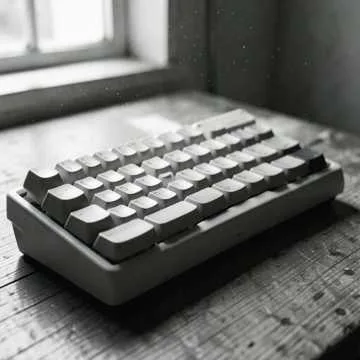
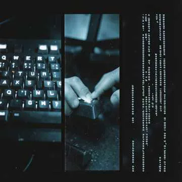
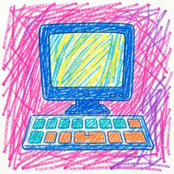
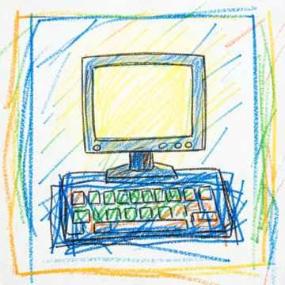

Wróć palcami do bazy
Lewa ręka na A S D F, prawa na J K L ;. Kciuki obsługują spację.
UMIEJĘTNOŚĆ ERY CYFROWEJ
Myśl szybciej –
pracuj skuteczniej!
Pisanie bezwzrokowe to ważna cyfrowa umiejętność w nauce, pracy i twórczości. Naucz się metody dziesięciopalcowej i wejdź na nowy poziom pracy z komputerem.
Bez rejestracji · We własnym tempie · 10–15 min dziennie
01 / PODSTAWY
Pisanie bezwzrokowe to pisanie wszystkimi dziesięcioma palcami bez patrzenia na klawiaturę. Zamiast szukać każdej litery, stopniowo zapamiętujesz ruch.
Naciśnij klawisz na schemacie, aby sprawdzić, który palec go obsługuje.
F i J: palce wskazujące. Wyczuj wypustki na tych klawiszach.
Ukraiński ЙЦУКЕН. Rząd podstawowy: Ф І В А · О Л Д Ж. Litera Ґ może wymagać osobnego klawisza lub kombinacji w zależności od systemu.
Lewa ręka na A S D F, prawa na J K L ;. Kciuki obsługują spację.
Rozluźnij ramiona, trzymaj nadgarstki prosto i nie opieraj ich o krawędź biurka. Schemat pokazuje strefy palców, a nie kształt konkretnej klawiatury.
Najpierw właściwy palec i dokładność. Jeśli robisz dużo błędów, zwolnij. Zamiast spoglądać w dół, wracaj uwagą do tekstu.
02 / CO CI TO DA
Mniej przerw na szukanie klawiszy, gdy piszesz e-mail lub wypełniasz dokument.
Śledź zdanie na ekranie i formułuj myśl, nie szukając każdej litery.
Dokumenty, kod, wiadomości i polecenia dla AI – ta umiejętność przydaje się codziennie.
Łatwiej zapisywać własne pomysły i notatki oraz wykonywać zadania pisemne.
Oswojenie z klawiaturą dodaje pewności siebie dzieciom i dorosłym.
Praktyczna podstawa pracy menedżera, analityka, programisty i zespołu biurowego.
03 / TWOJA OSZCZĘDNOŚĆ CZASU
Ile minut odzyskasz, jeśli ten sam tekst napiszesz szybciej?
Do przeliczenia przyjmujemy 1 umowne słowo = 5 znaków ze spacjami. Szacowany jest tylko czas pisania: objętość ÷ obecna szybkość − objętość ÷ docelowa szybkość. Bez czasu na zastanowienie i redakcję. 5 dni roboczych w tygodniu, 20 w miesiącu.
TWÓJ POTENCJAŁ NA DZIEŃ
Więcej czasu na to, co ważne.
04 / SPRÓBUJ JUŻ TERAZ
Sprawdź swoje tempo na start. Podłącz fizyczną klawiaturę, wybierz język tekstu i odpowiedni układ, a potem zacznij pisać.
Przepisuj tekst poniżej przez 30 sekund. Odliczanie zaczyna się od pierwszego znaku. Gdy czas się skończy, pojawi się wynik.
Wynik został zapisany. Naciśnij „Spróbuj ponownie”, aby rozpocząć nowy test.
Stoper ruszy od pierwszego znaku.
SPM = poprawne znaki ÷ minuty. WPM = SPM ÷ 5. Umowne słowo to 5 znaków; spacje i interpunkcja się liczą. Licznik pokazuje poprawne i wszystkie znaki we wpisanym tekście. Dokładność uwzględnia wszystkie wpisane znaki, łącznie z poprawionymi błędami. Apostrofy ' / ’ / ʼ i cudzysłowy " “ ” „ « » są traktowane jednakowo. Wklejanie tekstu jest wyłączone. Niczego nie wysyłamy ani nie zapisujemy.
05 / STWORZONE, BY UCZYĆ
Pięć różnych podejść z Typing Race 2026. Wybierz według celu: kurs krok po kroku, analityka, gra lub wyścigi.
Według wyników audytu ogłoszonych 6 października 2026. To ocena prac konkursowych, a nie ranking przydatności dla każdego ucznia.
01 / СолоГайдук Анна · 100/100
02 / Typing-Raceprodelt · 95/100
03 / TypTapАртем (artyd) · 73/100
„Гами” zgłoszono po zakończeniu oceniania. Touch Type Race Academy to praca organizatora poza konkursem.
Źródła: index.html, opisy sites/ i ANNOUNCEMENT.md z materiałów hackathonu. Ilustracje możliwości aplikacji.
06 / OD PRÓBY DO NAWYKU
Poświęcaj 10–15 minut dziennie. Rób przerwy i wracaj do trudnych klawiszy. Konkretna szybkość po 30 dniach nie jest gwarantowana.
Ułożenie palców, rząd podstawowy. Powolne ćwiczenia bez patrzenia w dół.
Górny i dolny rząd, cyfry, Shift. Dodawaj klawisze stopniowo.
Krótkie słowa i częste połączenia liter. Równe tempo i praca nad błędami.
Listy, notatki, prawdziwe teksty. Porównaj wynik z pierwszym dniem.
Zaznaczaj ukończone dni. Postęp zapisuje się tylko w tej przeglądarce i nie synchronizuje się między urządzeniami.
PIOSENKI DLA INSPIRACJI
Pięć piosenek z kolekcji Touch Type Race. Wybierz nastrój na następny trening.
UA · EN

Nie zwalniaj / Just TypePL · EN
Don’t move — just typeEN
Don’t move — typeEN · UA · PL
Just typeENТихо світиться екран,
Пальці завмерли на мить.
Думка вже летить вперед,
А руки ще вчаться жить.
One key.
One finger.
One more try.
Just start typing.
Ти дивишся вниз —
де та літера знов?
Думка вже поруч,
але не вистачає слів.
Backspace.
Again.
Ще один поворот.
А час собі йде,
і ніхто не чекає.
Don't hunt the keys.
Don't look down.
Keep your fingers
on the home row now.
Спочатку повільно,
спочатку не так.
A — S — D — F,
J — K — L.
Ще один рядок,
ще одна спроба.
And suddenly
your fingers know the road.
Ти ще не за п'ятсот?
Не гальмуй!
Just type,
just type,
just type.
Не шукай клавіші —
start your ride.
Accuracy first,
then comes speed.
Твоя думка летить —
let your fingers lead.
Ти ще не за п'ятсот?
It's all right.
Не гальмуй.
Just type.
Учора це були
лише букви й ряди.
Сьогодні вже слова
самі йдуть крізь пальці.
One word.
Two words.
One line more.
You don't need
to watch the keyboard anymore.
І раптом помічаєш:
ти дивишся лише вперед.
No looking down.
No stopping now.
The keyboard disappears,
and only thought remains.
Ти ще не за п'ятсот?
Не гальмуй!
Just type,
just type,
just type.
Не шукай клавіші —
start your ride.
Accuracy first,
then comes speed.
Твоя думка летить —
let your fingers lead.
Ти ще не за п'ятсот?
It's all right.
Не гальмуй.
Just type.
Fast is not the beginning.
First comes control.
One key.
One finger.
Then let it flow.
Не треба чекати,
коли станеш крутим.
You become faster
because you keep moving.
Day by day.
Line by line.
Your hands remember.
Your mind is free.
Ти ще не за п'ятсот?
Не гальмуй!
Typing Race —
come on, join the ride.
Accuracy first,
speed will come.
Keep on typing,
don't stop now.
Думка не має
чекати рук.
Let your fingers
follow your thought.
Ти ще не за п'ятсот?
Who cares tonight?
Put your hands on the keys.
And just type.
Just type.
Just type.
One key.
One finger.
One more line.
No looking down.
No wasting time.
Треба лише
одного разу почати.
Just start typing.
And never look back.
Cicho świeci ekran,
palce czekają na znak.
Myśl już biegnie do przodu,
a dłonie uczą się jak.
One key.
One finger.
One more try.
Just start typing.
Patrzysz w dół —
gdzie ta litera znów?
Myśl jest już gotowa,
lecz palce szukają słów.
Backspace.
Again.
Jeszcze jeden raz.
A czas płynie dalej,
nie zatrzyma się dla nas.
Don't hunt the keys.
Don't look down.
Keep your fingers
on the home row now.
Najpierw powoli,
nie zawsze bez błędów.
A — S — D — F,
J — K — L.
Jeszcze jedna linia,
jeszcze jedna próba.
And suddenly
your fingers know the road.
Jeszcze nie masz pięciuset?
Nie zwalniaj!
Just type,
just type,
just type.
Nie szukaj klawiszy —
start your ride.
Accuracy first,
then comes speed.
Twoja myśl już leci —
let your fingers lead.
Jeszcze nie masz pięciuset?
It's all right.
Nie zwalniaj.
Just type.
Wczoraj były tylko
litery i rzędy.
Dzisiaj całe słowa
płyną już bez przerwy.
One word.
Two words.
One line more.
You don't need
to watch the keyboard anymore.
I nagle zauważasz:
patrzysz tylko przed siebie.
No looking down.
No stopping now.
Klawiatura znika,
zostaje tylko myśl.
Jeszcze nie masz pięciuset?
Nie zwalniaj!
Just type,
just type,
just type.
Nie szukaj klawiszy —
start your ride.
Accuracy first,
then comes speed.
Twoja myśl już leci —
let your fingers lead.
Jeszcze nie masz pięciuset?
It's all right.
Nie zwalniaj.
Just type.
Fast is not the beginning.
First comes control.
One key.
One finger.
Then let it flow.
Nie musisz czekać,
aż będziesz mistrzem.
You become faster
because you keep moving.
Day by day.
Line by line.
Your hands remember.
Your mind is free.
Jeszcze nie masz pięciuset?
Nie zwalniaj!
Typing Race —
come on, join the ride.
Accuracy first,
speed will come.
Keep on typing,
don't stop now.
Myśl nie powinna
czekać na dłonie.
Let your fingers
follow your thought.
Jeszcze nie masz pięciuset?
Who cares tonight?
Połóż dłonie na klawiszach.
And just type.
Just type.
Just type.
One key.
One finger.
One more line.
No looking down.
No wasting time.
Trzeba po prostu
zacząć choć raz.
Just start typing.
And never look back.
The room is quiet.
The screen is bright.
Your hands are ready
for the typing light.
No need to panic.
No need to hide.
Place your fingers
and begin the ride.
Left hand waiting,
right hand too.
Every key is
a path for you.
A, S, D, F —
stay in control.
J, K, L —
now feel the flow.
Don’t chase letters
all around.
Keep your hands
where they belong.
Look at the screen.
Trust the row.
One small movement —
then you go.
Type on the keyboard,
key by key.
Let your hands learn
to move free.
Don’t look down,
keep your eyes ahead.
Your thoughts are faster
than the words you said.
Type on the keyboard,
don’t lose time.
One more word,
one more line.
Accuracy first,
speed will grow.
Keep on typing —
let your fingers know.
Backspace happens.
That’s okay.
Fix the letter,
then move away.
Not a failure,
not the end.
Every mistake
can be your friend.
Slow at first,
then faster still.
Practice turns
into skill.
The keys grow quiet,
the screen stays clear.
Your hands remember
why you’re here.
Type on the keyboard,
key by key.
Let your hands learn
to move free.
Don’t look down,
keep your eyes ahead.
Your thoughts are faster
than the words you said.
Type on the keyboard,
don’t lose time.
One more word,
one more line.
Accuracy first,
speed will grow.
Keep on typing —
let your fingers know.
Home row steady.
Breathe in slow.
One key.
One move.
Let it flow.
No magic shortcut,
no secret door.
Just keep typing
a little more.
Day by day,
the distance fades.
Your mind creates,
your hands translate.
Type on the keyboard,
feel the beat.
Thought and movement
finally meet.
No looking down,
no breaking pace.
Every new line
is a little race.
Type on the keyboard,
come alive.
Learn the rhythm,
start to fly.
Accuracy first,
speed will grow.
Keep on typing —
now you know.
The screen is bright.
The keys are near.
Your hands are ready.
The path is clear.
One key.
One word.
One more try.
Type on the keyboard.
Let your thoughts fly.
The room is quiet,
екран горить.
Twoje dłonie ready —
час починати вмить.
One key.
Один рух.
Jeszcze raz.
Type on the keyboard.
Left hand waiting,
права рука теж тут.
J, K, L —
poczuj ten flow.
Nie szukaj liter
по всій клавіатурі.
Keep your hands steady,
спокійно, без напруги.
Look at the screen,
oczy przed siebie.
Твоя думка вже летить —
twoje palce wiedzą, gdzie biegnie.
Type on the keyboard,
key by key.
Руки ready,
oczy free.
Не дивись вниз.
Nie zwalniaj dziś.
One more word.
Ще один рядок.
Type on the keyboard,
відчуй свій ритм.
Pisz bez strachu,
keep moving with it.
Accuracy first,
Just type, just type —
і вперед, не зупиняйся.
Backspace happens —
нічого страшного.
Popraw literę
і рухайся знову.
To nie porażka,
це частина гри.
Każdy błąd
навчає тебе йти.
Slow at first,
потім швидше знов.
Ćwiczenie zmienia
рухи у love.
The keys grow quiet,
думка звучить ясна.
Nie patrz na klawiaturę —
твоя дорога вже власна.
Type on the keyboard,
key by key.
Руки ready,
oczy free.
Не дивись вниз.
Nie zwalniaj dziś.
One more word.
Ще один рядок.
Type on the keyboard,
відчуй свій ритм.
Pisz bez strachu,
keep moving with it.
Accuracy first,
швидкість прийде потім.
Just type, just type —
і вперед, не зупиняйся.
Home row steady.
Вдихни спокійно.
Jeden klawisz,
рухайся впевнено.
No secret door,
nie ma skrótu w grze.
Ще один рядок —
і навичка росте.
Day by day,
dzień po dniu.
Твій розум створює,
a dłonie robią ruch.
Type on the keyboard,
key by key.
Руки ready,
oczy free.
Не дивись вниз.
Nie zwalniaj dziś.
One more word.
Ще один рядок.
Typing Race —
це твій новий шлях.
Pisz szybciej,
але точність — твій знак.
Your thoughts can fly,
коли пальці ведуть.
Type on the keyboard —
і слова вже живуть.
One key.
Один рух.
Jeszcze raz.
No looking down.
Не гай свій час.
Type on the keyboard.
Pisz, nie czekaj.
Набирай.
The screen is glowing softly,
your fingers wait for a sign.
Your thoughts are already moving,
your hands are learning in time.
One key.
One finger.
One more try.
Just start typing.
You look down —
where is that letter now?
Your thought is ready to fly,
but your fingers don’t know how.
Backspace.
Again.
One more time.
And time keeps moving forward,
it will not wait in line.
Don’t hunt the keys.
Don’t look down.
Keep your fingers
on the home row now.
At first, go slowly,
mistakes may come along.
A — S — D — F,
J — K — L.
One more line,
one more try.
And suddenly
your fingers know the way.
Haven’t hit five hundred?
Don’t slow down!
Just type,
just type,
just type.
Don’t search for keys —
start your ride.
Accuracy first,
then comes speed.
Your thought is already flying —
let your fingers lead.
Haven’t hit five hundred?
It’s all right.
Don’t slow down.
Just type.
Yesterday there were only
letters and rows.
Today whole words
keep starting to flow.
One word.
Two words.
One line more.
You don’t need
to watch the keyboard anymore.
And then you realize
you are looking straight ahead.
No looking down.
No stopping now.
The keyboard disappears —
only the thought is left.
Haven’t hit five hundred?
Don’t slow down!
Just type,
just type,
just type.
Don’t search for keys —
start your ride.
Accuracy first,
then comes speed.
Your thought is already flying —
let your fingers lead.
Haven’t hit five hundred?
It’s all right.
Don’t slow down.
Just type.
Fast is not the beginning.
First comes control.
One key.
One finger.
Then let it flow.
You don’t have to wait
until you are a master.
You become faster
because you keep moving.
Day by day.
Line by line.
Your hands remember.
Your mind is free.
Haven’t hit five hundred?
Don’t slow down!
Typing Race —
come on, join the ride.
Accuracy first,
speed will come.
Keep on typing,
don’t stop now.
Your thoughts should never
wait for your hands.
Let your fingers
follow your mind.
Haven’t hit five hundred?
Who cares tonight?
Put your hands upon the keys.
And just type.
Just type.
Just type.
One key.
One finger.
One more line.
No looking down.
No wasting time.
You only have to
begin one day.
Just start typing.
And never look back.
Piosenki włączają się dopiero po naciśnięciu Play. Jednocześnie gra jedno nagranie; rozpoczęcie testu wstrzymuje muzykę.
07 / LUDZIE + TECHNOLOGIE
Typing Race 2026 to hackathon edukacyjnych aplikacji do nauki pisania. Jego cel: stworzyć spójną ścieżkę nauki, w której dokładność i prawidłowe ruchy wyprzedzają szybkość.
AI może pomagać w projektowaniu interfejsów, pisaniu kodu, testach i dokumentacji. Człowiek formułuje zadanie, sprawdza wynik i odpowiada za jakość nauki. Nie zakładamy tutaj, z jakich modeli korzystali poszczególni autorzy.
Wypróbuj efekty tej pracy ↗TWÓJ NASTĘPNY KROK
Dziesięć palców. Jeden nowy nawyk.